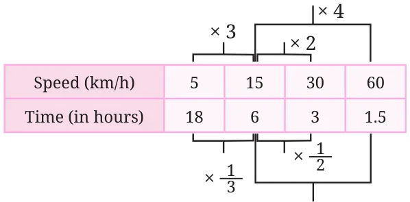

Do you recall the rule of three? When two ratios are proportional, i.e., when a : b :: c : d, then \(d = \frac{bc}{a}\) . We call such proportions direct proportions. We use this understanding to find the value of the fourth quantity (d), when the value of three quantities (a, b, and c) are given. Example 1: If 5 workers can move 4500 bricks in a day, how many workers are needed to move 18000 bricks in a day? This can be represented as a statement of proportionality \(- 4500\) : 18000 :: 5 : x. We can find the value of x by
\(x = \frac{18000 \times 5}{4500} = 20\)
Thus, the number of workers needed are 20.
Example 2: Puneeth’s father went from Lucknow to Kanpur in 3 hours by riding his motorcycle at a speed of 30 km/h. If he takes a car instead and drives at 60 km/h, how long will it take him to reach Kanpur? Can we represent this problem with the following statement of proportionality \(- 30\) : 60 :: 3 : x ? Will the travel time increase or decrease as the speed of the motorcycle increases? The following table shows the time taken to travel from Lucknow to Kanpur using different modes of transport:
Walk Bicycle Motorcycle Car
Speed (km/h) 5 15 30 60 Time (in hours) 18 6 3 1.5
From this table, we notice that when the speed increases, the time taken to travel the same distance decreases.

Does it decrease by the same rate (or factor)? Going by bicycle is 3 times faster than walking \((15 \div 5)\). The speed has increased 3 times. The travel time has decreased 3 times too \((18 \div 6)\). The speed has increased by the same factor by which the travel time has decreased. Check if this is the case for the other modes of transport. Since both quantities, speed and time, change by the same factor, they are proportional. But they change in opposite directions, or inversely. Such proportions are called inverse proportions. From the table, we can see that the product of speed and time are the same for all modes of transport, namely 90 km. Two quantities x and y vary in inverse proportion if there exists a relation of the type xy \(= k\), where k is a constant. In the previous example, if x represents the speed and y represents the time taken, then k is the distance between Lucknow and Kanpur, which remains constant.

\(\times \frac{1}{4}\)
Thus, if quantities x and y are inversely proportional, and x_{1} and x_{2} are values of x that have corresponding y values y_{1} and y_{2}, then \(x_{1}y_{1}= x_{2}y_{2}= k\) (some constant). From these we can see that \(\frac{x1}{x} _{2} = \frac{y2}{y} _{1}\). Let us check if this is true for other modes of transport, such as walking and by car. Let us use x to represent speed and y to represent time.
\(x_{1}= 5\), \(x_{2}= 60\), \(y_{1}= 18\), \(y_{2}= 1.5\). \(\frac{x1}{x} _{2} = \frac{5}{60} = 0.083333\)...
What is the value of \(\frac{1.5}{18} \frac{y2}{y} _{1}\) ? It is 0.083333... too!